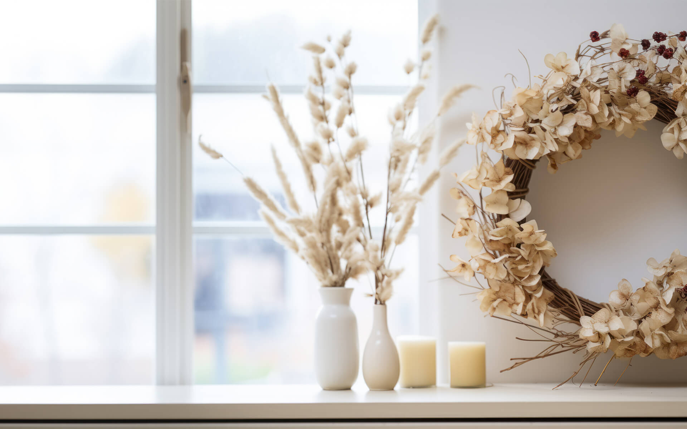
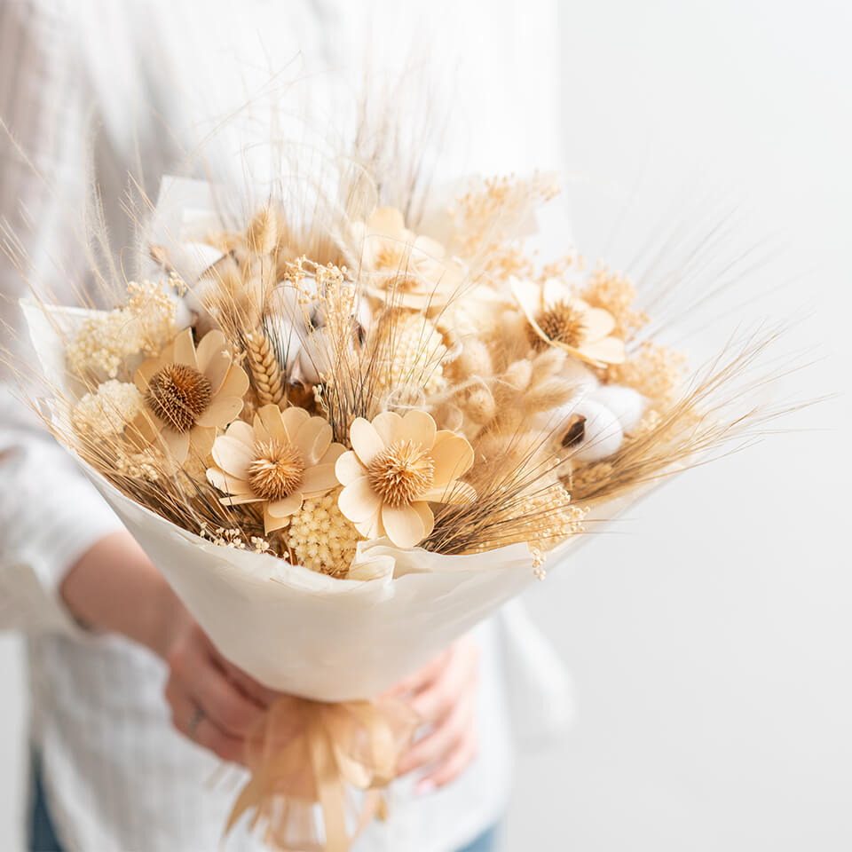
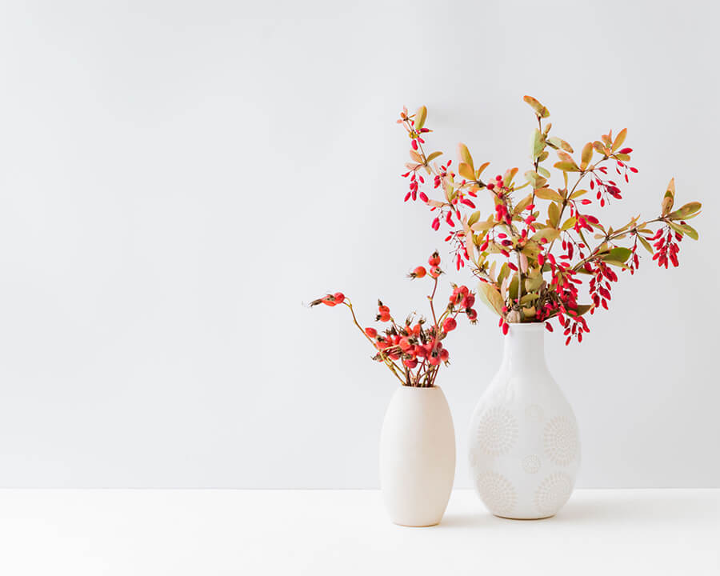
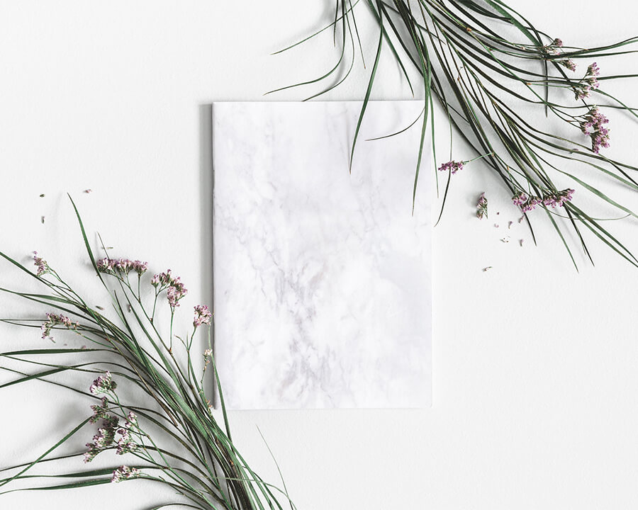
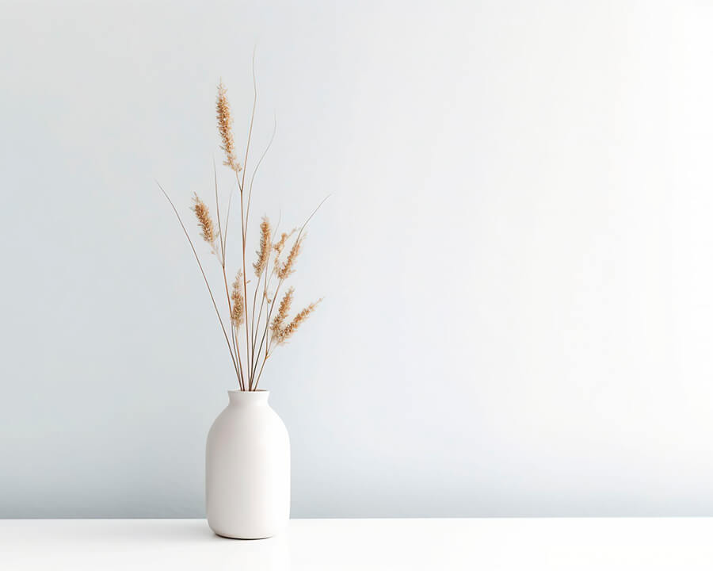
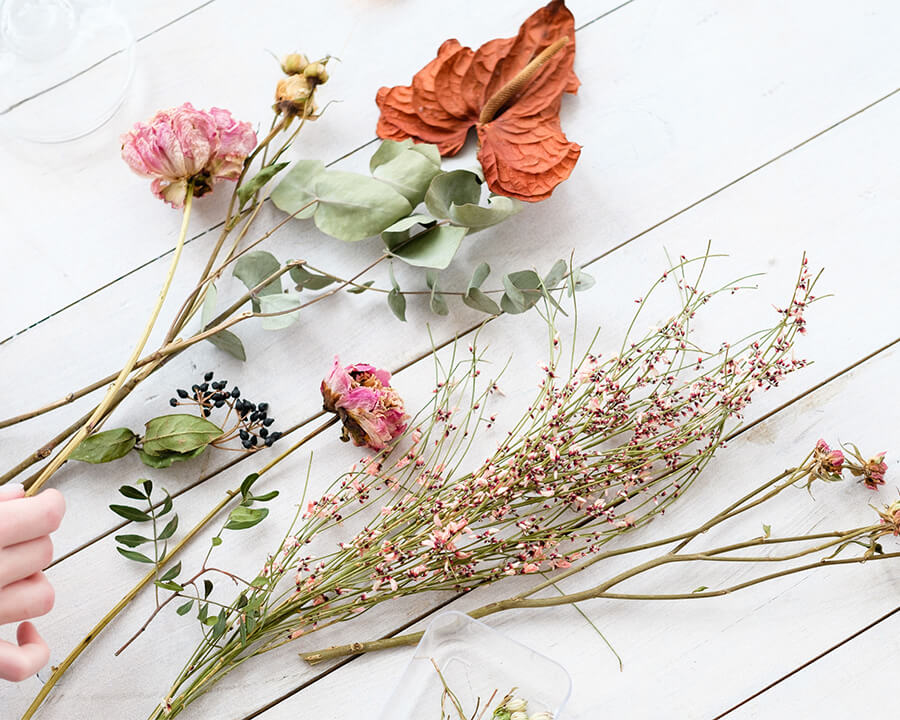
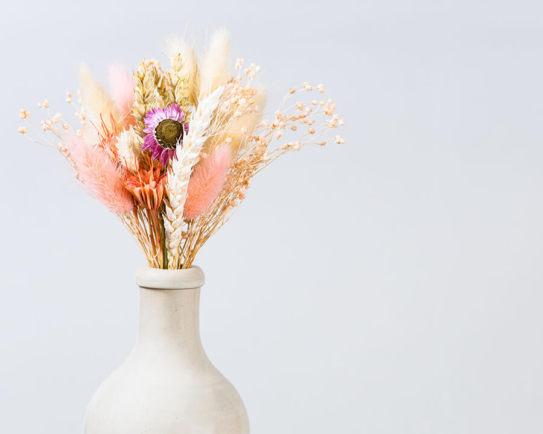
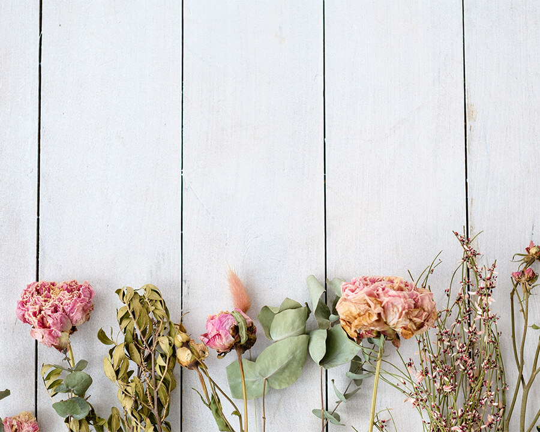

ຊີວິດໃນທົ່ງດອກໄມ້ທີ່ມີຫກີ່ນຫອມສົດຊື່ນ
ທ່ານລອງໃຊ້ຊິວິດໃນທົ່ງດອກໄມ້ທີ່ມີຫກີ່ນຫອມສົດຊື່ນ ແລ້ວທ່ານກໍຈະຮຸ້ສືກເຖິງຄວາມສົດຊື່ນແລະຜ່ອນຄາຍ.
ແຕ່ເນື່ອງຈາກວ່າດອກໄມ້ນັ້ນມັນບານໃນຊ່ວງເວລາທີ່ສັ້ນໆ,ເພາະສະນັ້ນຂ້າພະເຈົ້າຈິ່ງຢາກເກັບຄວາມງາມມັນໄວ້ດ້ວຍການອົບພວກມັນໃຫ້ແຫ້ງເພື່ອໃຫ້ຄົງຮູບຮ່າງໄວ້ດັ່ງເດິມ.

Profile ແນະນຳຕົວ
ຂ້າພະເຈົ້າເປັນນັກພັດທະນາເວັບໄຊແລະແອັບພິເຄເຊັນ.ແຕ່ໃນຍາມວ່າງຂອງຂ້າພະເຈົ້າມັກນັ່ງຊົມດອກໄມ້ທີ່ປູກຕາມສວນສາທາລະນະເປັນຫຼາຍຊົ່ວໂມງ.
ດັ່ງນັ້ນຂ້າພະເຈົ້າຈິ່ງຢາກເກັບຄວາມງາມມັນໄວ້ດ້ວຍການອົບພວກມັນໃຫ້ແຫ້ງເພື່ອໃຫ້ຄົງຮູບຮ່າງໄວ້ດັ່ງເດິມ.
Works ຜົນງານ





